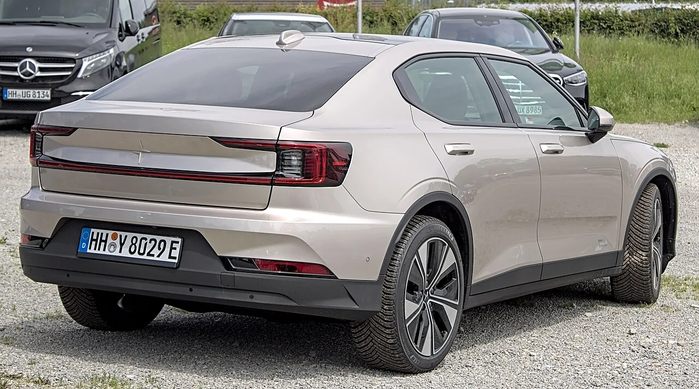
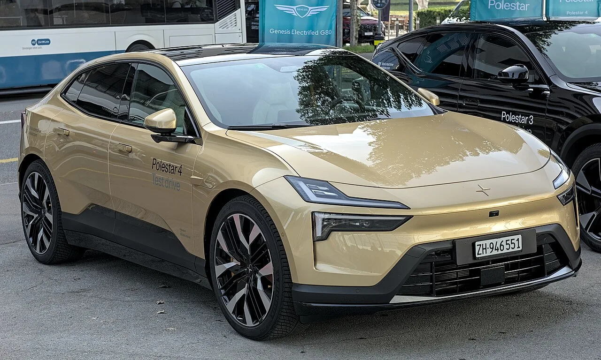
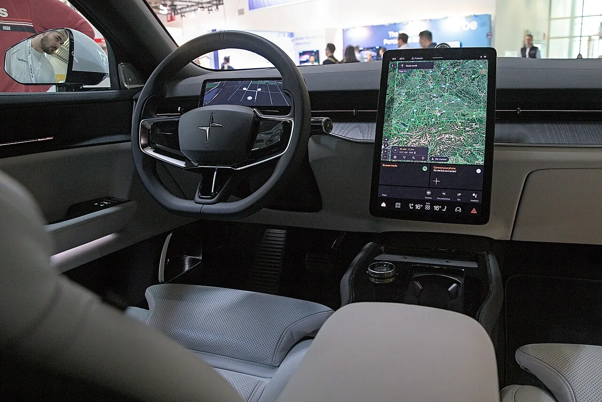

▲ 폴스타 매장. 미국에서는 딜러가 회사를 상대로 소송을 제기했다
폴스타의 미국 시장 철수를 두고 딜러가 소송을 제기했습니다.
원고는 뉴저지의 프레스티지 임포트(Prestige Imports), 청구액은 2,500만 달러입니다. 원화로 약 350억 원 규모입니다.
핵심 주장은 이렇습니다. 폴스타가 내세운 정부 규제는 명분일 뿐, 실제로는 2년 전부터 미국을 떠날 계획이었다는 것입니다.
다만 이 글에 담긴 내용은 대부분 소장에 담긴 원고 측 주장입니다. 법원 판단이 나온 사안이 아닙니다.
1. 폴스타가 밝힌 철수 이유
먼저 폴스타가 공식적으로 든 이유를 정리하겠습니다.
커넥티드 차량 규정(Connected Vehicle Rule)입니다. 중국과 러시아에 연결된 소프트웨어를 탑재한 차량의 미국 판매를 제한하는 규정입니다.
폴스타는 중국 지리(Geely) 계열이고 상당수 물량을 중국에서 생산합니다. 이 규정을 통과하려면 별도 승인이 필요한데, 미국 상무부가 승인 갱신을 거부했다는 것이 폴스타의 설명입니다.
표면적으로는 규제 때문에 어쩔 수 없이 나간다는 구도입니다.
2. 딜러의 반박 — "볼보는 했는데"
프레스티지 임포트의 반박은 자매 브랜드 볼보를 근거로 삼습니다.
볼보 역시 지리 계열이고 같은 규정의 적용을 받습니다. 그런데 볼보는 미국에 남아 있습니다. 요건을 맞추기 위한 대응을 했기 때문입니다.
딜러 측 주장은 이겁니다. 폴스타에게도 같은 기회가 있었지만 추진하지 않았다는 것입니다.
이를 뒷받침하는 정황으로 두 가지가 제시됐습니다.
🔍 딜러 측이 제시한 정황 두 가지
- ①스웨덴 통상장관 벤야민 도우사의 발언 — "폴스타는 도움을 요청한 적이 없다." 볼보와 달리 규제 대응에 정부 지원을 구하지 않았다는 의미입니다.
- ②승인 거부에 항소하지 않음 — 상무부 결정에 이의를 제기하는 절차를 밟지 않았습니다.
정말 남고 싶었다면 취했을 조치를 취하지 않았다는 것이 소장의 논리입니다.

▲ 폴스타 2. 같은 지리 계열인 볼보는 규정에 대응해 미국에 남았다
3. 결정적인 정황 — 2026년 2월의 확장 계약
소장에서 가장 무게가 실리는 대목은 시점입니다.
2026년 2월까지도 폴스타가 딜러들에게 다년 확장 계약 서명을 권유했다는 주장입니다.
딜러가 신규 매장을 열거나 확장하려면 부지·인테리어·인력·재고에 상당한 자본을 투입해야 합니다. 다년 계약을 맺는다는 것은 그만큼 장기 회수를 전제로 한 결정입니다.
만약 폴스타가 그 시점에 이미 철수를 확정하고 있었다면, 회수 불가능한 투자를 유도한 셈이 됩니다. 프레스티지 임포트의 2,500만 달러 청구는 여기서 나옵니다.
4. 법적 쟁점 — 60일과 정당한 사유
소송의 법적 근거는 뉴저지 프랜차이즈 관행법(New Jersey Franchise Practices Act)입니다.
미국 대부분의 주는 자동차 딜러를 보호하는 프랜차이즈법을 두고 있습니다. 제조사가 일방적으로 계약을 끊으면 딜러가 투입한 자본이 통째로 날아가기 때문입니다.
뉴저지법은 계약 종료 시 두 가지를 요구합니다.
⚖️ 뉴저지 프랜차이즈 관행법의 두 요건
- ①최소 60일 전 사전 통지
- ②정당한 사유(good cause)의 제시
프레스티지 임포트는 폴스타가 이 둘을 모두 지키지 않았다고 주장합니다.
여기서 '정당한 사유'가 쟁점이 됩니다. 정부 규제로 판매가 불가능해진 상황은 통상 정당한 사유로 인정받을 여지가 있습니다. 그래서 딜러 측이 "규제는 명분일 뿐"이라는 주장에 힘을 싣는 것입니다.

▲ 폴스타 4. 딜러는 2026년 2월까지 다년 확장 계약을 권유받았다고 주장한다
5. 배경에 있는 숫자 — 대당 3만5,000달러 손실
소송과 별개로, 폴스타의 미국 사업 자체가 순탄하지 않았다는 지적이 있습니다.
버니 모레노 상원의원은 폴스타가 미국에서 차 한 대를 팔 때마다 약 3만5,000달러를 손해 본다고 언급하며, "폴스타가 규정을 편리한 핑계로 썼다"고 말했습니다.
이 수치는 회사가 공개한 값이 아니라 정치인의 발언입니다. 그대로 사실로 받아들이기는 어렵습니다.
다만 방향은 딜러 측 주장과 맞물립니다. 팔수록 손해가 나는 구조였다면, 규제는 나가기 좋은 명분이 될 수 있습니다.
참고로 폴스타는 시장별로 성적이 크게 갈립니다. 한국에서는 판매가 74% 늘고 순이익이 13배가 됐지만, 그 안에도 다른 사정이 있습니다.

▲ 폴스타 실내. 미국 철수와 별개로 시장별 성적은 크게 갈린다
6. 정리 — 주장과 사실을 나눠서
확인된 사실은 이렇습니다. 폴스타가 미국 시장에서 철수했고, 공식 사유는 상무부의 커넥티드 차량 규정 승인 갱신 거부입니다. 그리고 뉴저지 딜러 프레스티지 임포트가 2,500만 달러 소송을 제기했습니다.
원고 측 주장은 다음과 같습니다. 폴스타가 2년 전부터 철수를 계획했고, 규제를 명분으로 삼았으며, 60일 통지와 정당한 사유 없이 계약을 끊었다는 것입니다. 근거로는 볼보와의 대응 차이, 스웨덴 통상장관 발언, 항소 미실시, 2026년 2월 확장 계약 권유가 제시됐습니다.
이는 아직 소장 단계이고 법원 판단이 나오지 않았습니다. 폴스타 측 반론이 제출되면 사실관계가 달라질 수 있습니다.